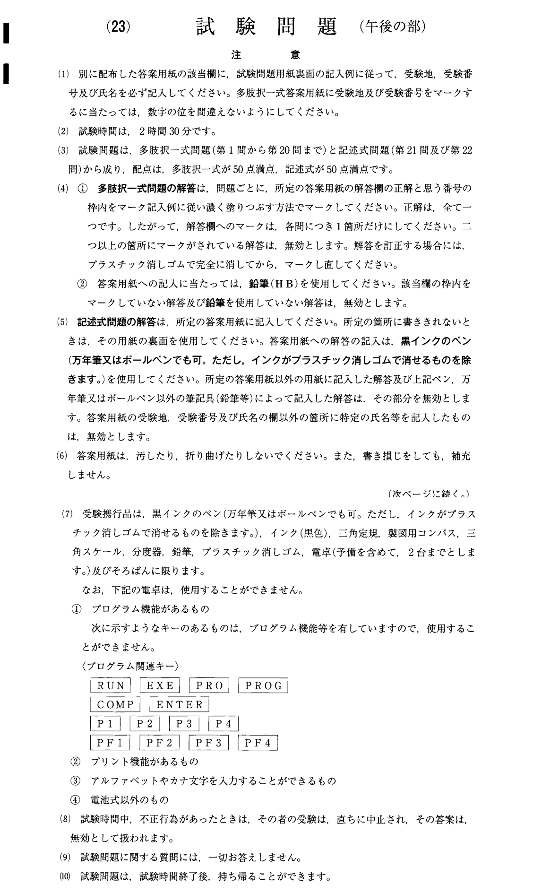
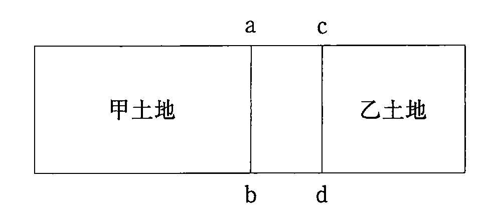
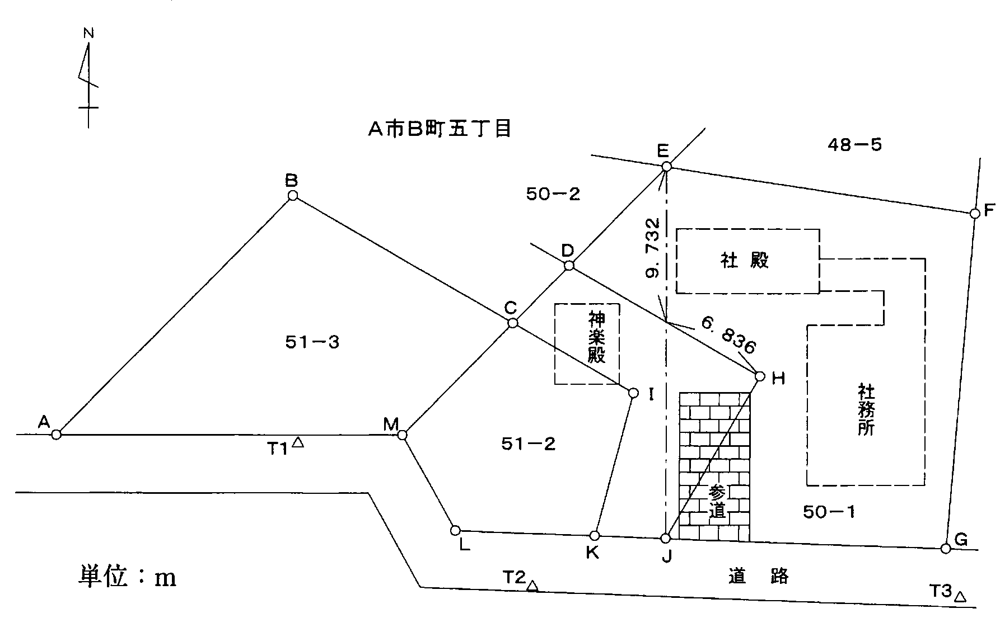
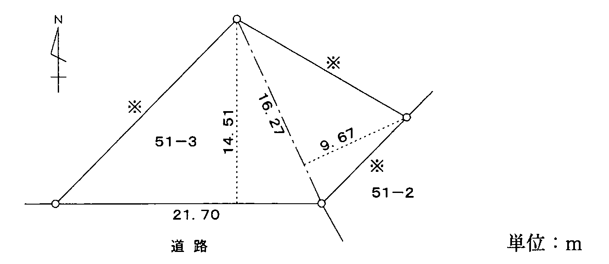
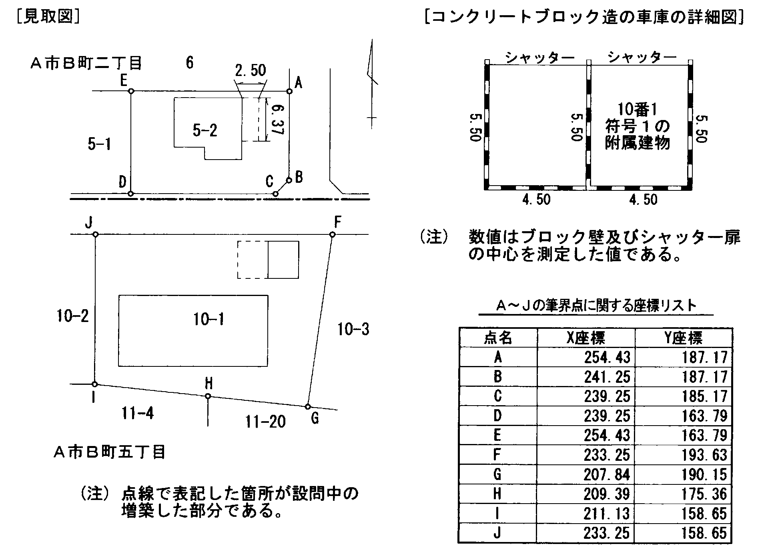
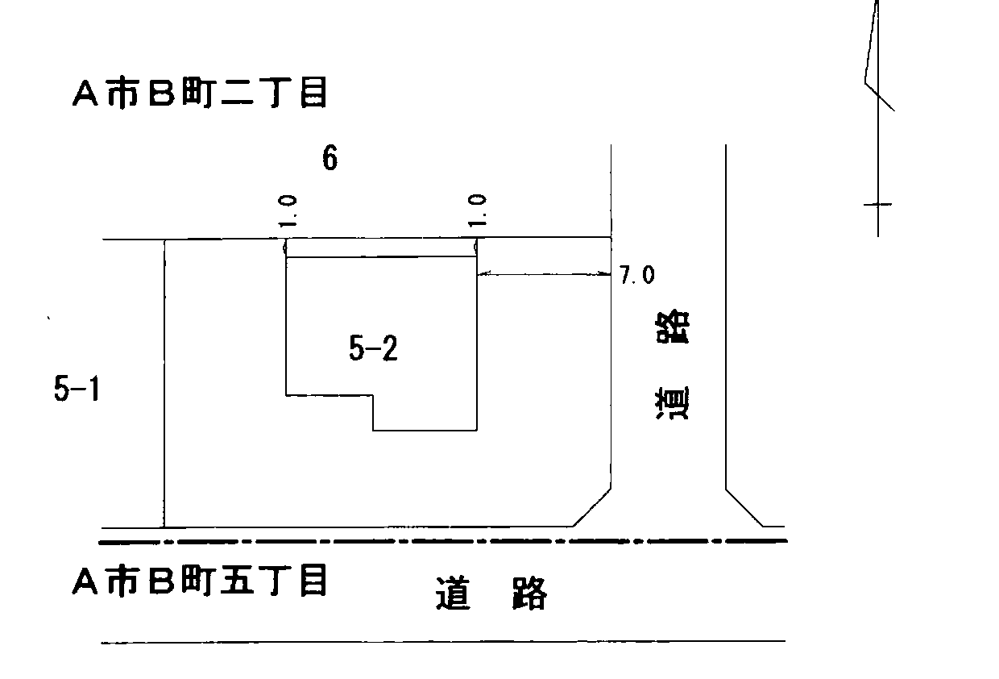
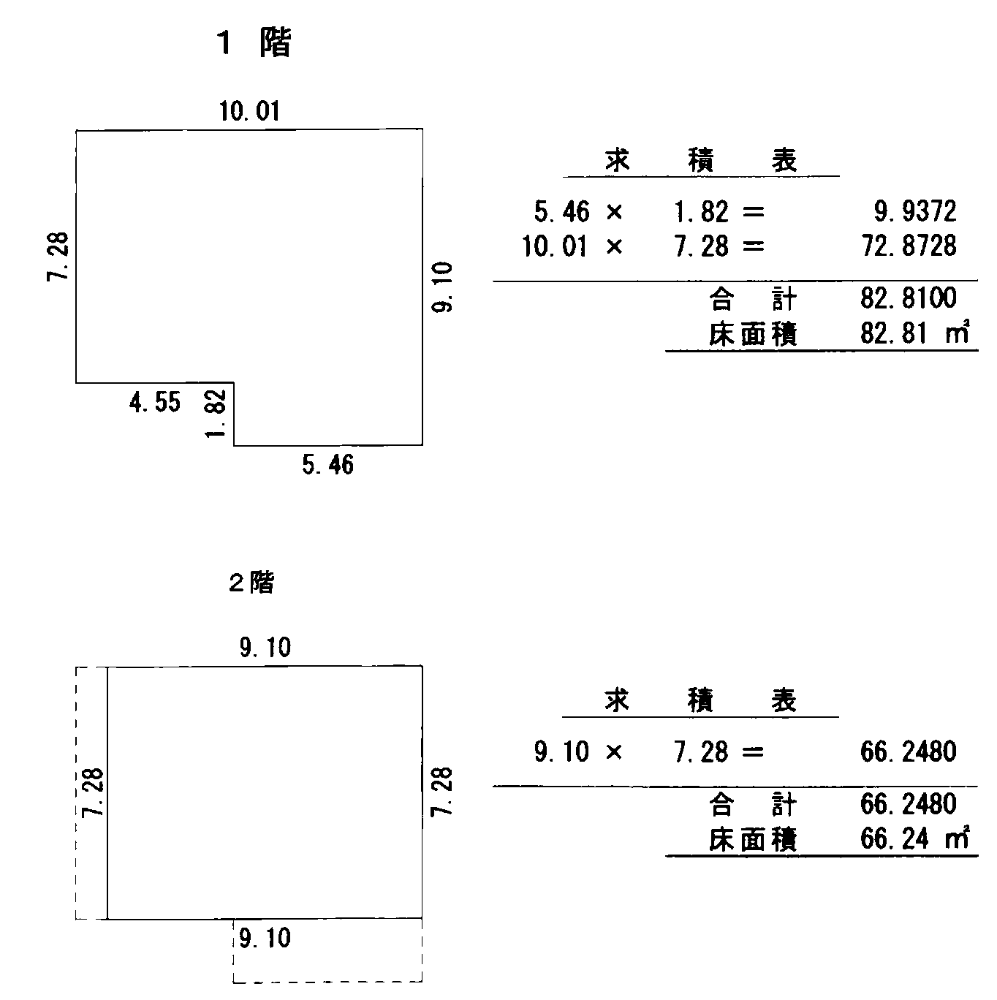
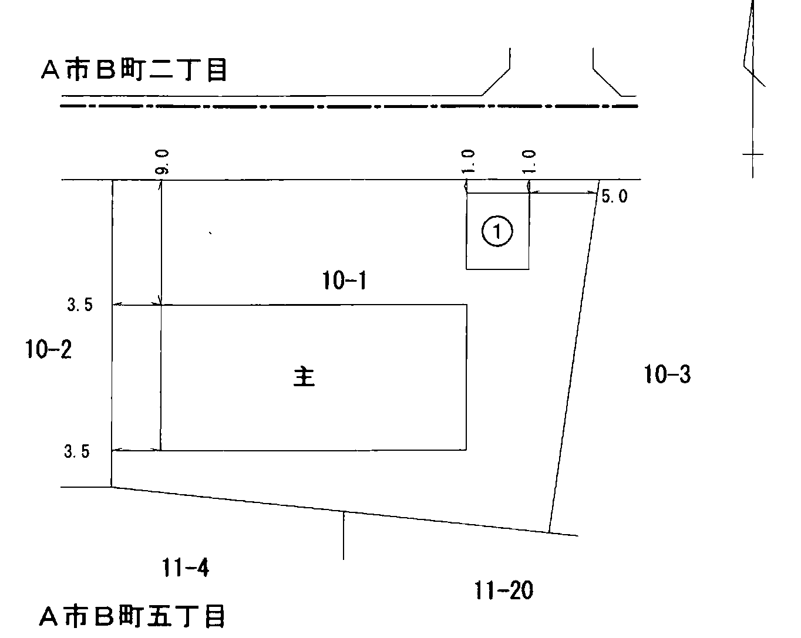
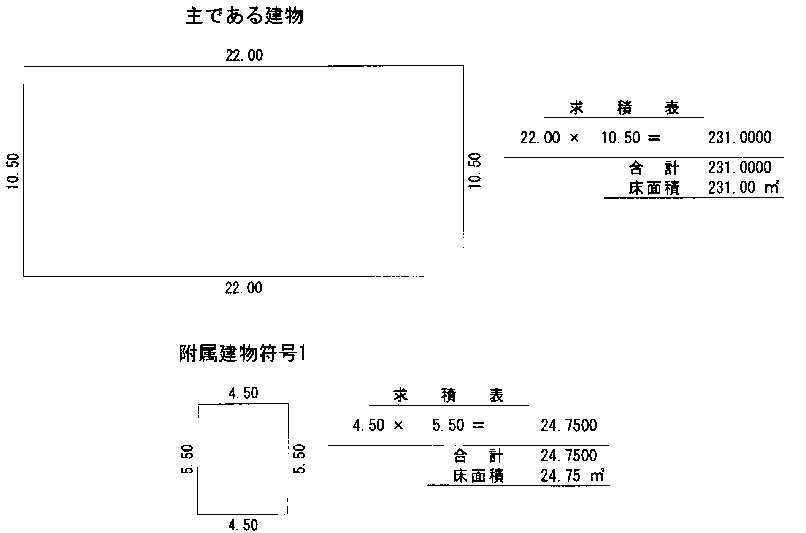
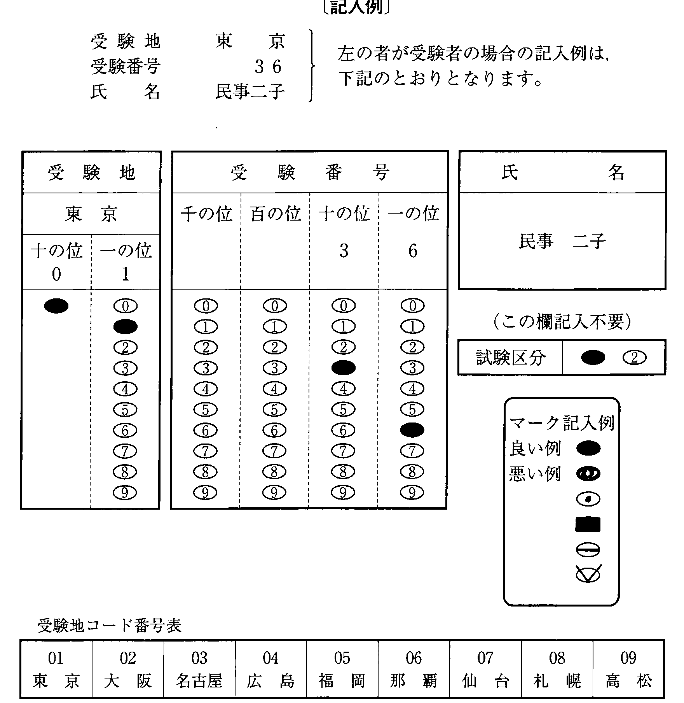

注意（問題冊子の表紙）

多肢択一式（第1問〜第20問）
第1問
意思表示に関する次のアからオまでの記述のうち，判例の趣旨に照らし正しいものの組合せは，後記1から5までのうちどれか。
- アAが，Bに強迫されて，A所有の甲土地をBに売り渡して所有権の移転の登記をし，さらに，Bが事情を知らないCに甲土地を転売して所有権の移転の登記をした場合には，Aがその後にAB間の売買契約を強迫を理由として取り消したとしても，Aは，Cに対して甲土地の所有権を主張することはできない。
- イAとBとが通謀して，A所有の甲土地をBに仮装譲渡して所有権の移転の登記をし，さらに，Bが仮装譲渡の事実を知らないCに甲土地を転売し，その後，Cが仮装譲渡の事実を知っているDに甲土地を転売した場合には，Aは，Dに対して甲土地の所有権を主張することはできない。
- ウAが，A所有の甲土地を売り渡すつもりで，錯誤によりA所有の乙土地をBに対して売り渡した場合には，Aに重大な過失があるときであっても，Bは，当該売買契約の無効を主張することができる。※
- エAが，Bにだまされて，A所有の甲土地をCに売却した場合には，CがBによるAに対する詐欺を知らなかったときであっても，Aは，AC間の売買契約を取り消すことができる。※
- オAが，A所有の甲土地を売却するに当たり，Bにその代理権を与えていたところ，Bが，売買代金を着服する意図で，甲土地をCに売却した場合において，Cが，Bの着服の意図を知らなくても，その意図を知ることができたときは，Aは，当該売買契約の無効を主張することができる。※
1 アイ2 アウ3 イオ4 ウエ5 エオ
※ ウ 平成29年の民法改正（令和2年4月1日施行）により，錯誤による意思表示は無効ではなく，取り消すことができるものとなった（民法95条1項）。
※ エ 平成29年の民法改正（令和2年4月1日施行）により，相手方に対する意思表示について第三者が詐欺を行った場合は，相手方がその事実を知り，又は知ることができたときに限り，取り消すことができると改められた（民法96条2項）。
※ オ 平成29年の民法改正（令和2年4月1日施行）により，代理人が自己又は第三者の利益を図る目的で代理権の範囲内の行為をした場合において，相手方がその目的を知り，又は知ることができたときは，その行為は代理権を有しない者がした行為とみなされることとなった（民法107条）。
第2問
時効の援用に関する次のアからオまでの記述のうち，判例の趣旨に照らし誤っているものの組合せは，後記1から5までのうちどれか。
- アAのBに対する売買代金債務を連帯保証したCは，Aの売買代金債務について消滅時効が完成した後にBから連帯保証債務の履行を求められた場合には，Aの売買代金債務についての消滅時効が完成する前に自らの連帯保証債務を承認していたときであっても，Aの売買代金債務についての消滅時効を援用してBからの請求を拒むことができる。
- イAを抵当権者として先順位の抵当権が設定されている不動産の後順位の抵当権者であるBは，Aの先順位の抵当権の被担保債権について消滅時効が完成した場合であっても，その消滅時効を援用することができない。
- ウ甲土地上に乙建物を所有しているAから乙建物を賃借しているBが，甲土地の所有者であるCから，所有権に基づき乙建物から退去して甲土地を明け渡すよう求められた場合において，Aの占有による甲土地の所有権の取得時効が完成しているときは，Bは，その取得時効を援用してCからの請求を拒むことができる。
- エ被相続人Aの占有により甲土地の取得時効が完成していた場合には，Aの共同相続人の一人であるBは，甲土地の全部について取得時効を援用することができる。
- オAに対する貸金債務を承認したBが，Aから貸金返還請求を受けた場合には，Bは，その承認の際に，その貸金債務について消滅時効が完成していることを知らなかったときであっても，貸金債務の消滅時効を援用してAからの請求を拒むことができない。
1 アイ2 アオ3 イエ4 ウエ5 ウオ
第3問
A，B及びCが各3分の1の持分で甲土地を共有している場合に関する次のアからオまでの記述のうち，判例の趣旨に照らし誤っているものの組合せは，後記1から5までのうちどれか。
- アA，B及びCが共同して甲土地をDに賃貸している場合において，その賃貸借契約を解除するときは，Aは，B及びCの了解がなくても，単独でDに対して解除権を行使することができる。
- イAが，B及びCの承諾を得ることなく，単独で甲土地全部を占有している場合であっても，B及びCは，その共有持分が過半数を超えることを理由として，Aに対して当然には甲土地の明渡しを請求することはできない。
- ウBの持分についてのみ第三者Dへの不実の持分移転登記がされている場合には，A又はCは，それぞれ単独でDに対してその持分移転登記の抹消登記手続を請求することはできない。
- エ第三者Eが甲土地を不法に占有したことによりA，B及びCの使用が妨げられた場合であっても，Aは，Eに対してその持分割合を超えて損害賠償を請求することはできない。
- オ甲土地の分割が裁判所に請求された場合において，甲土地を現物で分割することが不可能であるか，又は分割によってその価格を著しく減少させるおそれがあるときは，裁判所は，甲土地を競売に付し，その売得金をA，B及びCの各持分割合に応じて分割することを命ずることができる。
1 アウ2 アエ3 イウ4 イオ5 エオ
第4問
登記官が行う登記識別情報の通知に関する次のアからオまでの記述のうち，正しいものの組合せは，後記1から5までのうちどれか。
- ア所有権の登記名義人が二人以上である土地の合筆の登記の申請については，登記名義人ごとに同一の内容の登記識別情報を通知しなければならない。
- イ登記識別情報の通知を受けるべき者が，官庁又は公署である場合には，あらかじめ登記識別情報の通知を希望する旨の申出がなければ，登記識別情報の通知を要しない。
- ウ登記識別情報を記載した書面の交付を受けた者が，当該書面を自宅の火災により焼失してしまった場合には，登記識別情報の再発行をすることができる。
- エ登記識別情報を記載した書面を交付する方法によって通知を受けるべき者が，登記完了の時から30日以内に登記識別情報を記載した書面を受領しない場合には，登記識別情報の通知を要しない。
- オ家庭裁判所が選任した不在者の財産管理人が，当該不在者が所有する所有権の登記がある土地の合筆の登記を申請し，当該登記が完了した場合は，登記識別情報の通知は，当該不在者の財産管理人に対して行う。
1 アエ2 アオ3 イウ4 イオ5 ウエ
第5問
地図又は地図に準ずる図面の訂正（以下本問において「地図訂正」という。）に関する次のアからオまでの記述のうち，正しいものの組合せは，後記1から5までのうちどれか。
- ア地図訂正の申出は，その地図に表示された土地の所有権の登記名義人が二人である場合には，そのうちの一人からすることができる。
- イ一筆の土地の一部が滅失したため，これを原因とする地積の変更の登記を申請する場合には，併せて地図訂正の申出をしなければならない。
- ウ隣接地の所有者間において両土地の地番を付け替える旨の合意を含む調停が成立したとしても，その合意に基づいて両土地の地番を付け替える地図訂正の申出をすることはできない。
- エ登記官は，地図に誤りがあると認められる場合であっても，地図訂正の申出がないときは，職権で地図訂正をすることはできない。
- オ地図に表示された土地の位置についての地図訂正の申出をする場合には，当該土地の位置の誤りが，登記所に備え付けられている地積測量図によって確認することができるときであっても，当該土地の位置に誤りがあることを証する情報の提供をしなければならない。
1 アウ2 アオ3 イエ4 イオ5 ウエ
第6問
分筆の登記の申請に関する次のアからオまでの記述のうち，正しいものは，幾つあるか。
- ア所有権が敷地権である旨の登記がされている土地の分筆は，その敷地権の登記がされた区分建物における所有権の登記名義人の3分の2以上の者の申請により，することができる。※
- イ区分建物が所在する土地を2筆に分筆する場合において，その土地の一方が当該区分建物が所在する土地以外の土地となるときは，当該分筆の登記の申請情報と併せて，当該土地を当該区分建物の敷地とする旨の規約を定めたことを証する情報の提供をしなければならない。
- ウ土地の一部が別の地目となった場合には，登記官が職権で分筆することができるので，所有権の登記名義人は，分筆の登記を申請することを要しない。
- エ分筆の登記の申請において，分筆前の地積と分筆後の地積が異なる場合であっても，その地積の差が分筆前の地積を基準にして不動産登記規則に定められている誤差の限度内であるときは，地積に関する更正の登記を申請することを要しない。
- オ所有権の登記がない土地について，表題部所有者ではない当該土地の実体上の所有者は，表題部所有者の承諾を証する情報を提供して，当該土地の分筆の登記を申請することができる。
1 1個2 2個3 3個4 4個5 5個
※ ア 令和3年の民法改正（令和5年4月1日施行）により共有物の変更・管理に関する規定が改められ，共有地の分筆の登記の申請人についての取扱いも変わった（令和5年3月28日付け法務省民二第533号通達）。
第7問
登記官が定める土地の地番に関する次のアからオまでの記述のうち，誤っているものの組合せは，後記1から5までのうちどれか。
- ア土地の表題登記をする場合において使用される地番は，特別の事情がない限り，当該土地に隣接するいずれかの土地の地番に支号を付して定める。
- イ要役地についてする地役権の登記がある土地で地番に支号がないものについて分筆の登記をする場合において，当該地役権を分筆後のいずれかの土地について消滅させることを証する地役権者が作成した情報が提供され，当該土地の地役権を抹消するときは，分筆した土地について支号を用いない地番を存することができる。
- ウ特別の事情がある場合には，合筆した土地について，合筆前の首位の地番をもってその地番としなくとも差し支えない。
- エ地番は，市，区，町，村，字又はこれに準ずる地域ごとに起番し，土地の位置が分かりやすいものとなるように定められる。
- オ甲土地を甲土地及び乙土地に分筆した後，錯誤により分筆の登記の申請がされたことを原因として，分筆の登記の抹消がされた場合には，抹消された乙土地の地番は，特別の事情がなくても，再使用することができる。
1 アウ2 アオ3 イウ4 イエ5 エオ
第8問
所有権以外の権利のある土地の分筆及び合筆の登記に関する次のアからオまでの記述のうち，誤っているものの組合せは，後記1から5までのうちどれか。
- ア抵当権の登記がある甲土地を甲土地及び乙土地に分筆し，乙土地については，抵当権を消滅させる登記を申請する場合において，当該抵当権を目的とする第三者の権利に関する登記があるときは，当該分筆の登記後の乙土地について，抵当権者が当該抵当権を消滅させることを承諾したことを証する情報のほか，当該第三者が当該抵当権を消滅させることを承諾したことを証する情報も提供しなければならない。
- イ承役地についてする地役権の登記がある土地の分筆の登記又は合筆の登記を申請する場合において，地役権の設定の範囲が分筆後又は合筆後の土地の一部となるときは，申請情報には地役権の設定の範囲を記載し，地役権図面及び地役権証明書を添付しなければならない。
- ウ永小作権又は採石権の登記がある土地は，登記の目的，申請の受付の年月日及び受付番号並びに登記原因及びその日付が同一であっても，合筆の登記を申請することはできない。
- エ抵当権の登記がある甲土地を甲土地及び乙土地に分筆する際に，乙土地について抵当権者が当該抵当権を消滅させることを承諾したことを証する情報を提供して分筆の登記がされた場合であっても，当該分筆の登記が錯誤により申請がされたときは，分筆錯誤を原因として，当該分筆の登記の抹消を申請することができる。
- オ所有権の移転の仮登記がある土地は，その申請の受付の年月日及び受付番号並びに登記原因及びその日付が同一である場合には，合筆の登記を申請することができる。
1 アイ2 アオ3 イウ4 ウエ5 エオ
第9問
下図のような甲土地及び乙土地の所有権の及ぶ範囲（以下本問において「所有権界」という。）又は筆界に関する次のアからオまでの記述のうち，判例の趣旨に照らし正しいものは，幾つあるか。
〔図〕

- ア甲土地と乙土地との筆界がa－bである場合において，甲土地の所有者Aと乙土地の所有者Bが所有権界及び筆界をともにc－dとするとの合意をしたときは，所有権界及び筆界は，c－dとなる。
- イ甲土地と乙土地との所有権界及び筆界がいずれもa－bである場合において，甲土地の所有者Aと乙土地の所有者Bがともに所有権界及び筆界をc－dと認識したまま，その後Aがabdcaで囲まれた土地を時効取得したときは，甲土地と乙土地との所有権界及び筆界は，c－dとなる。
- ウ甲土地と乙土地との所有権界及び筆界がいずれもa－bである場合において，所有権界及び筆界がc－dであると信じてabdcaで囲まれた土地を占有している甲土地の所有者Aから，所有権界及び筆界はc－dであるとの説明を受け，第三者がそれを信じて購入したときは，甲土地と乙土地との所有権界及び筆界は，c－dとなる。
- エ乙土地の所有者が国である場合において，甲土地と乙土地との筆界がa－bであるときに，甲土地の所有者Aと国との間で，境界をc－dと定める国有財産法上の官民境界確定協議の契約が調った場合には，所有権界と筆界は異なることになる。
- オ筆界確定訴訟において，甲土地と乙土地との筆界をa－bとする確定判決があった場合であっても，甲土地の所有者Aと乙土地の所有者Bは，甲土地と乙土地との所有権界をc－dとする合意をすることができる。
1 1個2 2個3 3個4 4個5 5個
第10問
一の申請情報で申請する登記に関する次のアからオまでの記述のうち，正しいものの組合せは，後記1から5までのうちどれか。
- ア甲建物を区分して，その一部を乙建物の附属建物とする建物の区分の登記と建物の合併の登記は，一の申請情報で申請することはできない。
- イ甲土地についてする地積の更正の登記と更正後の分筆の登記は，一の申請情報で申請することができる。
- ウ甲土地についてする表題部所有者の住所の変更の登記と合筆の登記は，一の申請情報で申請することはできない。
- エ甲土地についてする地目の変更の登記と地積の更正の登記は，一の申請情報で申請することができる。
- オ同一の登記所の管轄区域内にある甲建物の滅失の登記と乙建物の表題登記は，登記名義人が同一であれば，一の申請情報で申請することができる。
1 アウ2 アエ3 イエ4 イオ5 ウオ
第11問
登記の代位申請に関する次のアからオまでの記述のうち，正しいものの組合せは，後記1から5までのうちどれか。
- ア所有権の登記名義人がAである甲土地の一部を買い受けたBが，当該部分にCを抵当権者とする抵当権を設定した場合であっても，Cは，A及びBに代位して甲土地から抵当権が設定された部分を分筆する登記を申請することはできない。
- イAが所有する甲土地及び乙土地を合筆の上Bが購入する契約を締結した場合には，Bは，Aに代位して合筆の登記を申請することができる。
- ウ土地区画整理事業を施行する者は，土地区画整理事業の施行のために必要がある場合には，所有者に代位して土地の分筆又は合筆の登記を申請することができる。
- エ1筆の土地につき相続によりA，B及びC共有名義の登記がされた後に，当該土地を3筆に分筆し，うち2筆をAが取得し，B及びCが残り1筆を共有取得する旨の遺産分割調停が成立した場合には，Aは，単独で，B及びCに代位して分筆の登記を申請することができる。
- オ甲土地の一部に地役権の設定を受けた地役権者Aは，甲土地の所有者Bに代位して分筆の登記を申請することができる。
1 アウ2 アオ3 イエ4 イオ5 ウエ
第12問
表題部の更正の登記に関する次のアからオまでの記述のうち，誤っているものの組合せは，後記1から5までのうちどれか。
- ア表題部に記録された登記原因及びその日付に錯誤があることが判明した場合であっても，表題部所有者は，表題部の更正の登記を申請することはできない。
- イ表題部に共有者A持分2分の1，共有者B持分2分の1と記録されている場合において，共有者A持分3分の2，共有者B持分3分の1とする表題部所有者の更正の登記をAが申請するときは，Bの承諾書とともに，Aの共有持分権を証する情報を提供しなければならない。
- ウ表題部にAが所有者として記録されている場合において，当該建物の実体上の所有者がBであるときは，Bは，Aに対抗することができる裁判があったことを証する情報を提供して，表題部所有者の更正の登記を申請することができる。
- エ表題部に記録されている所有者の氏名に誤りがあった場合において，表題部所有者の更正の登記を申請するときは，錯誤があったことを証する市区町村長，登記官その他の公務員が作成した情報を提供しなければならないが，当該情報がない場合には，これに代わるべき情報を添付情報とすることができる。
- オ表題部にAが所有者として記録されている場合において，共有者A持分2分の1，共有者B持分2分の1とする表題部所有者の更正の登記をBが申請するときは，Bの住所を証する情報を提供しなければならない。
1 アイ2 アオ3 イウ4 ウエ5 エオ
第13問
建物の滅失の登記に関する次のアからオまでの記述のうち，正しいものは，幾つあるか。
- ア表題登記がある建物を全て取り壊し，その材料を用いて建物を再度建築したときは，表題登記がある既存建物について，建物の滅失の登記を申請しなければならない。
- イ所有権の登記以外の権利に関する登記がある建物が滅失したときは，当該権利の登記名義人の承諾書を添付して，建物の滅失の登記を申請しなければならない。
- ウ所有者が異なる区分建物が属する一棟の建物が滅失した場合において，区分建物の滅失の登記を申請するときは，区分建物の所有者の一人が一棟の建物の滅失の登記を申請することができる。
- エ区分した建物として登記がされているが，初めから区分した状態になかったことが明らかな建物については，錯誤を登記原因として建物の滅失の登記を申請しなければならない。
- オ鉄筋コンクリート造の建物について，火災により建物の内部の一部が焼失したが，主要構造部分が残存し，使用目的に従った使用が可能であるときは，建物の滅失の登記を申請することはできない。
1 1個2 2個3 3個4 4個5 5個
第14問
登記所の管轄に関する次のアからオまでの記述のうち，誤っているものの組合せは，後記1から5までのうちどれか。
- ア埋立地に建築された建物の敷地が編入されるべき行政区画が定められていない場合には，当該建物の表題登記を申請することはできない。
- イ甲登記所において登記されている建物に附属建物を新築し，乙登記所の管轄区域にまたがることとなったときは，主である建物と附属建物の床面積の大きさにかかわらず，甲登記所に所在の変更の登記を申請しなければならない。
- ウ建物が複数の登記所の管轄区域にまたがって建築されたときは，法務大臣又は法務局若しくは地方法務局の長が当該建物の登記事務を行う登記所を指定するまでは，建物の表題登記を申請することができない。
- エ甲登記所の管轄区域に主である建物と附属建物がある場合において，主である建物のみを乙登記所の管轄区域にえい行移転したときは，附属建物が主である建物よりも床面積が大きい場合であっても，管轄登記所は，乙登記所となる。
- オ表題登記がある建物をえい行移転により甲登記所の管轄区域から乙登記所の管轄区域に移動した場合には，甲登記所に所在の変更の登記を申請しなければならない。
1 アウ2 アエ3 イエ4 イオ5 ウオ
第15問
建物図面及び各階平面図に関する次のアからオまでの記述のうち，誤っているものの組合せは，後記1から5までのうちどれか。
- ア甲建物から乙建物を分割する登記を申請する場合において，分割後の建物の床面積に変更がないときは，各階平面図の添付を要しない。
- イ甲土地上にのみ存する区分建物について，新たに規約を定め，乙土地を当該区分建物の規約敷地とする登記を申請する場合には，建物図面の添付を要しない。
- ウ区分建物の増築の登記を申請する場合において，一棟の建物についても登記内容に変更があるときは，当該箇所を表示した一棟の建物に関する建物図面及び各階平面図を添付しなければならない。
- エ仮換地上に建築された建物に関する表題登記に添付する建物図面においては，仮換地の形状を実線で図示し，所在欄には括弧書きで換地後の予定地番を記載しなければならない。
- オ建物を甲土地から乙土地にえい行移転したことによる建物の所在の変更の登記をした場合における従前の建物図面の保存期間は，30年である。
1 アイ2 アウ3 イオ4 ウエ5 エオ
第16問
不動産の表示に関する登記についての次のアからオまでの記述のうち，正しいものの組合せは，後記1から5までのうちどれか。
- ア区分建物の一部を増築した後に，当該建物について共用部分である旨の登記がされた場合には，増築した当時の増築に係る区分建物の所有権の登記名義人は，共用部分である旨の登記がされた日から1か月以内に，増築の登記を申請しなければならない。
- イ区分建物の表題登記の申請をした際に申請情報として提供した所有権敷地権の割合について変更が生じた場合には，所有権の登記名義人は，変更の日から1か月以内に，表題部に関する変更の登記を申請しなければならない。
- ウ分筆により建物の所在する土地の地番が変更した場合には，当該建物の所有権の登記名義人は，変更の日から1か月以内に，建物の所在に関する変更の登記を申請しなければならない。
- エ地目が山林として登記されている土地上に住宅が建築された後に当該土地の所有権を新たに取得した者は，その取得の日から1か月以内に，当該土地の地目の変更の登記を申請しなければならない。
- オ1棟の建物が，その一部の取壊しにより，物理的に2棟以上の建物となった場合には，その所有権の登記名義人は，工事の完了の日から1か月以内に，建物の分割の登記を申請しなければならない。
1 アイ2 アオ3 イウ4 ウエ5 エオ
第17問
附属建物に関する次のアからオまでの記述のうち，誤っているものの組合せは，後記1から5までのうちどれか。
- ア附属建物として登記されている建物を，登記記録上，別の1個の建物とする登記を申請する場合において，当該建物が共有であるときは，共有者全員で申請しなければならない。
- イ表題登記があり，既に各階平面図が登記所に提出されている建物について，附属建物を新築した場合には，その附属建物の新築に伴う表題部の変更の登記の申請に添付する各階平面図は，新築された附属建物のみのものでよい。
- ウ主である建物が取り壊され，その後に附属建物が取り壊された場合において，建物の滅失の登記を申請するときは，附属建物が取り壊された日付を申請情報とすることを要しない。
- エ車庫として利用されていた附属建物を，その基礎部分を残して，取り壊し，その基礎上に構造及び床面積が同一であって，物置として利用される附属建物を新築した場合に行う登記申請においては，建物図面の添付を要しない。
- オ表題登記があり，既に建物図面が登記所に提出されている建物について，当該建物の数個の附属建物のうち，その一つを残して他の全ての附属建物を取り壊した場合であっても，附属建物の滅失による表題部の変更の登記を申請するときは，建物図面の添付を省略することはできない。
1 アイ2 アオ3 イウ4 ウエ5 エオ
第18問
建物が合体した場合の登記の申請に関する次のアからオまでの記述のうち，誤っているものの組合せは，後記1から5までのうちどれか。
- ア表題登記がある建物の主である建物とその附属建物が合体した場合には，合体後の建物についての建物の表題登記及び合体前の建物についての表題部の登記の抹消を申請しなければならない。
- イ表題登記がない建物と表題登記がある建物のみが合体して1個の建物となった後に，当該合体前の表題登記がない建物の所有者から当該合体後の建物について合体前の表題登記がない建物の所有権に相当する持分を取得した者は，当該持分取得の日から1か月以内に，合体後の建物についての建物の表題登記及び合体前の建物についての建物の表題部の登記の抹消を申請しなければならない。
- ウ所有権の登記がある建物と表題登記がない建物が合体して1個の建物となった後に，合体による建物の表題登記及び合体前の建物についての建物の表題部の登記の抹消並びに当該表題登記がない建物の所有者を当該合体後の建物の登記名義人とする所有権の登記の申請を合体前の所有権の登記がある建物の所有権の登記名義人が申請する場合には，合体後の建物についての当該申請人の所有権を証する情報を提供しなければならない。
- エ表題登記のみがある建物が合体して1個の建物となった後に，合体前の建物の表題部所有者に誤りがあり，更正の登記によって表題部所有者となった者は，その者に係る表題部所有者についての更正の登記があった日から1か月以内に，合体後の建物について建物の表題登記及び合体前の建物についての建物の表題部の登記の抹消を申請しなければならない。
- オ合体前の建物がいずれも表題登記がない建物であるときは，合体後の建物については，合体による表題登記の申請ではなく，新築による建物の表題登記を申請しなければならない。
1 アイ2 アウ3 イオ4 ウエ5 エオ
第19問
建物の表題登記の申請に関する次のアからオまでの記述のうち，正しいものの組合せは，後記1から5までのうちどれか。
- ア表題登記がある区分建物でない建物（以下本問において「非区分建物」という。）に接続して区分建物が新築されて一棟の建物となったことにより，当該表題登記がある非区分建物が区分建物となった場合における当該新築に係る区分建物についての表題登記の申請は，当該接続前の表題登記がある非区分建物についての表題部の登記の抹消の申請と併せてしなければならない。
- イ表題登記がない建物に接続して区分建物が新築されて一棟の建物となった場合には，当該区分建物の所有者が，他の区分建物の所有者に代わって，当該他の区分建物についての表題登記を申請することができる。
- ウ一棟の建物に属する区分建物全部の原始取得者が，その表題登記をしない間に，そのうちの一部の区分建物を他に売却した場合には，その売却した区分建物の表題登記の申請は，原始取得者が，その転得者に代位してする方法により，しなければならない。
- エ一棟の建物に属する建物の全部が同一の原始取得者の所有に属する場合には，その原始取得者は，その一棟の建物に属する建物の全部を1個の非区分建物としてその表題登記を申請することができる。
- オ新築された表題登記がない区分建物の原始取得者が死亡した場合には，その相続人は，自己を当該区分建物の表題部所有者とする表題登記を申請することができる。
1 アイ2 アウ3 イエ4 ウオ5 エオ
第20問
下記の【事例】に関する土地家屋調査士又は土地家屋調査士法人の業務について述べた次のアからオまでの記述のうち，正しいものの組合せは，後記1から5までのうちどれか。
【事例】
甲土地の登記名義人Aは，甲土地と隣接するBを登記名義人とする乙土地との筆界について，筆界特定（以下「筆界特定①」という。）の申請を行った。また，Bは，甲土地及び乙土地とは全く無関係の丙土地の登記名義人でもあるところ，丙土地と隣接する丁土地との筆界について，筆界特定（以下「筆界特定②」という。）の申請を行った。
なお，Aは，筆界特定②の申請に関しては，何ら関係を有していないものとする。
- ア土地家屋調査士CがAから筆界特定①の手続について代理する事務を受任している場合において，Cは，Aの同意があればBから筆界特定②の手続について代理する事務を受任することができる。
- イ土地家屋調査士法人DがAから筆界特定①の手続について代理する事務を受任している場合において，Dの社員である土地家屋調査士Eは，自らこれに関与していないときは，Aの同意があれば，Bから筆界特定②の手続について代理する事務を受任することができる。
- ウ土地家屋調査士法人DがAから筆界特定①の手続について代理する事務を受任している場合において，Dの社員である土地家屋調査士Eは，自らこれに関与したときであっても，Aの同意があればDを脱退した後に，Bから筆界特定①の手続について法務局又は地方法務局に提出する書類を作成する事務を受任することができる。
- エ土地家屋調査士法人Dは，Aから筆界特定①の手続について何度も協議を受け，Aの信頼を得ていたが，実際には，Aは，筆界特定①の申請手続を自ら行い，Dにその手続について代理する事務を委任しなかった。この場合において，Dは，Aの同意があれば，Bから筆界特定①の手続について法務局又は地方法務局に提出する書類を作成する事務を受任することができる。
- オ土地家屋調査士法人Dの使用人である土地家屋調査士EがAから筆界特定①の手続について法務局又は地方法務局に提出する書類を作成する事務を受任している場合には，Dは，Aの同意があっても，Bから筆界特定①の手続について法務局又は地方法務局に提出する書類を作成する事務を受任することはできない。
1 アウ2 アオ3 イウ4 イエ5 エオ
第21問（土地）
第21問A市B町三丁目1番2号に事務所を有する土地家屋調査士中村容子が，下記見取図に示すA市B町五丁目50番地1に主たる事務所を有する宗教法人雨堤天満宮，代表役員荒牧英雄から，A市B町五丁目50番1に接続する無番地の土地（下記見取図のC，D，H，J，K，I，Cの各点を直線で結んだ線で囲まれた部分。以下「本件土地」という。）に関して，所有権の登記を行うために必要となる土地の表示に関する登記の申請について依頼されたものとして，後記の調査結果に基づき，別紙第21問答案用紙を用いて，後記の問いに答えなさい。
〔見取図〕

見取図中，A点からM点までの各点は，境界標の位置を示す。T1からT3までは，A市基準点を示す。
〔土地家屋調査士中村容子による調査結果〕
1資料調査の結果
(1)登記所における登記記録の調査結果
（表題部）
（権利部）
| 甲 区 | 順位2番 所有権移転 |
|---|
| A市B町五丁目50番地1 宗教法人 雨堤天満宮 |
|---|
| 乙 区 | なし |
|---|
（表題部）
| 所 在 | A市B町五丁目 |
|---|
| 地 番 | 51番2 |
|---|
| 地 目 | 省略 |
|---|
| 地 積 | 省略 |
|---|
（権利部）
| 甲 区 | 順位2番 所有権移転 |
|---|
| A市B町五丁目50番地1 宗教法人 雨堤天満宮 |
|---|
| 乙 区 | なし |
|---|
50番1及び51番2の地積測量図は，備え付けられていない。隣接の土地については，51番3に地積測量図が提出されており，交付された地積測量図の写しの抜粋は，以下のとおりである。

三斜求積表
21.70 × 14.51 × 1／2 ＝ 157.4335
16.27 × 9.67 × 1／2 ＝ 78.66545計 236.09895
236 ㎡
※：辺長の記載はあるが，省略している。
(2)A市道路管理課における道路境界の調査結果
A市道路管理課において本件土地付近の道路境界について調査を行った結果，50番1，51番2及び51番3において道路境界の確定がされていた。今回の測量の結果とA市備付道路境界図は一致していることを確認した。
(3)A財務事務所における本件土地の調査結果
A財務事務所には，本件土地に関する資料，その他測量図等は，保管されていなかった。A財務事務所担当官から，本件土地は国有財産であることを確認することができたが，占有状況からして時効取得が可能であるとのことであった。
(4)隣接土地に係る資料の調査結果
51番3は，参拝者用の駐車場として，当該土地の所有者と宗教法人雨堤天満宮との間で，賃貸借契約が結ばれている。賃貸借契約書に添付された図面には，51番3と51番2との境界線について，その辺長が10.05 mと記載されている。
2土地の利用状況，筆界点の状況並びに立会い及び測量の結果
(1)土地の利用状況
代表役員荒牧英雄によると，本件土地も含めて，50番1，51番2は，昭和初期から現在まで，神社の敷地として維持，管理しており，一般に開放されている。宗教法人雨堤天満宮が50番1及び51番2を買い受けるまでは，神社の敷地は，地主から借りて使用していた。大正以前は，現在の社殿より20 mほど南側に小さな社があり，周辺は，一面，畑であった。宗教法人雨堤天満宮は，昭和26年8月19日に，50番1及び51番2を前所有者である吉川仁志から買い受け，所有権を取得した。その後，神楽殿を建築し，参道を整備して現在に至っている。これまで，本件土地について，土地の所有に関する問合せやそれに伴う測量などはなかった。また，51番2と51番3との境界付近については，M点を起点としE点へ向けてブロック塀が築造されており，その長さは，10.05 mであった。
C点付近のブロック塀の終点からB点へ向けて，金網フェンスが設置されている。土地家屋調査士中村容子の検証の結果，M点とC点の点間については，ブロック塀の長さと地積測量図の辺長が相違していることが確認された。
(2)筆界点の状況
A点，L点及びJ点には市金属標が，B点，E点，F点，G点及びM点には石標が埋設されている。
(3)立会い等
A財務事務所担当官，A市道路管理課職員及び隣接土地所有者と境界についての
確認を得た上で，C点，D点，H点及びI点にコンクリート杭を，K点に金属標を設置した。
(4)測量の結果
A市基準点であるT1からT3までを器械点として観測を行った結果，得られたデータは，以下のとおりである。
［A市基準点成果表］
| 名称 | X座標(m) | Y座標(m) |
|---|
| T1 | 309.14 | 292.20 |
| T2 | 300.12 | 306.99 |
| T3 | 299.47 | 333.78 |
［観測データ］
| 器械点 | 後視点 | 測点 | 水平角 | 平面距離(m) |
|---|
| T1 | T2 | A | 150°21′44″ | 15.120 |
| T1 | T2 | M | 324° 2′29″ | 6.613 |
| T2 | T3 | K | 319° 7′54″ | 5.067 |
［測量によって得られた座標］
| 名称 | X座標(m) | Y座標(m) |
|---|
| D | 320.31 | 309.24 |
| E | 326.52 | 315.34 |
| F | 323.58 | 334.66 |
| G | 302.56 | 332.88 |
| I | 312.05 | 313.06 |
| J | 303.18 | 315.34 |
| L | 303.65 | 302.14 |
| B | 省略 | 省略 |
D点からH点への方向角は，120° 0′ 0″ である。A点とB点を結ぶ直線とE点とM点を結ぶ直線は，平行である。また，C点及びD点は，E点とM点を結ぶ直線上
の点であり，J点及びK点は，G点とL点を結ぶ直線上の点である。
E点とJ点を結ぶ直線とD点とH点を結ぶ直線の交点からE点及びH点までの距離は，それぞれ9.732 m，6.836 mである。A市基準点成果を用いて行う測量においては，距離に関する補正計算は行わないものとする。
なお，測量年月日は，平成23年8月10日である。
3取得時効の経緯
本件土地については，宗教法人雨堤天満宮の占有が認められ，代表役員荒牧英雄が，平成23年6月10日，A財務事務所に対し，取得時効に必要な主張をして，時効取得の手続を行った。後日，A財務事務所から，取得時効が成立し，宗教法人雨堤天満宮が所有権を有することを証する書面が交付された。同書面には，「占有開始年月日 昭和26年8月19日，時効完成年月日 昭和46年8月19日」と記載されている。
問1本件土地は，宗教法人雨堤天満宮が時効取得したが，その要件となる具体的事実を記載しなさい。
問2C点及びH点の座標値を求めなさい。
問3本件土地について申請すべき登記の申請書を，別紙第21問答案用紙（その1）の空欄を埋めて，完成させなさい。
なお，地積は，今回の測量の成果である座標値を用いて，座標法により求積すること。
問4問3の登記申請書に添付する地積測量図及び土地所在図を，別紙第21問答案用紙（その2）を用いて，完成させなさい。
(注)1座標値は，計算結果の小数点以下第3位を四捨五入し，小数点以下第2位までとすること。
2訂正，加入，削除をしたときは，押印や字数を記載することを要しない。
3地積測量図には，今回の測量の成果である座標値から求めた筆界点間の辺長を，計算結果の小数点以下第3位を四捨五入し，記載すること。ただし，各境界点の座標値の表示，平面直角座標系の番号又は記号，求積の方法及び地積の表示の記載は，省略して差し支えない。
4T2，T3の各点は，地積測量図にその地点を明示して名称を付した上，用紙の適宜の場所に，その名称及び座標値を記載すること。
5申請を受ける登記所と当該法人の登記を受けた登記所は，同一である。
6本件土地における近傍類似の土地の地図の縮尺は，500分の1である。
7必要な登記の申請は，書面を提出する方法によって行うものとする。
〔三角関数真数表〕
| 角度 | sin | cos | tan |
|---|
| 1°44′24″ | 0.03036 | 0.99953 | 0.03037 |
| 30° 0′ 0″ | 0.50000 | 0.86602 | 0.57735 |
| 44°29′ 7″ | 0.70072 | 0.71343 | 0.98219 |
| 45°19′48″ | 0.71116 | 0.70302 | 1.01158 |
| 50°31′18″ | 0.77186 | 0.63578 | 1.21403 |
| 58°37′20″ | 0.85375 | 0.52067 | 1.63969 |
| 85°25′ 9″ | 0.99680 | 0.07986 | 12.48105 |
| 88°36′36″ | 0.99970 | 0.02425 | 41.21189 |
| 89°48′55″ | 0.99999 | 0.00322 | 310.17156 |
第22問（建物）
第22問A市B町二丁目5番地2に住所を有する畑山邦彦は，後記の登記記録のとおり土地と建物を所有しており，この建物に増築を行った。また，A市B町五丁目10番1の土地に存する建物の符号1の附属建物についても，土地所有者の了承を得て，車庫としての増築を同時に行った。A市B町三丁目に事務所を有する土地家屋調査士大谷和宏が，畑山邦彦から，上記の工事に基づいて家屋番号5番2の建物についてする登記の申請手続を依頼されたものとして，別紙第22問答案用紙を用いて，後記の問いに答えなさい。

(注)1建物の測定値は，壁及び柱の中心線において測定した数値である。
2既存の建物については，登記所に提出されている図面と相違ないことを確認した。図面に記載されている数値の単位は，全てmである。
3壁の厚さは，以下のとおりである。
家屋番号5番2の建物 12 cm
家屋番号10番1の主である建物 15 cm
家屋番号10番1の符号1の附属建物 12 cm
シャッターの厚さは考慮しないものとする。
4家屋番号10番1の符号1の附属建物の南北方向の測定は，ブロック壁の中心
とシャッター扉の中心において測定した。
5建物から敷地境界までの距離は，建物外壁から測定した数値である。
6建物の角は，全て直角に交わっている。
7建物の床から天井までの高さは，全て2.5 m以上である。
8家屋番号5番2の建物に増築した箇所の屋根には，かわらが使用されている。
9家屋番号10番1の符号1の附属建物に増築した車庫は，増築前の建物と同一の構造であり，増築前の建物と利用上及び構造上の独立性を有している。
10敷地については，筆界点の座標成果を得た。
〔土地家屋調査士大谷和宏が行った調査の結果〕
1家屋番号5番2の建物について行った増築工事は，居間の拡充のために行われた。この工事に関する費用は，畑山邦彦が支払った。
2家屋番号10番1の附属建物は，海野洋子が車庫として利用しているが，畑山邦彦が費用を支払って自己の利用する車庫を増築した。
3上記1及び2の工事が完了したのは，平成23年8月2日である。
4畑山邦彦は，10番1の土地の共有者である海野洋子から，平成23年8月4日に，その持分の一部を取得した。
〔平成23年8月12日にA地方法務局において確認した登記記録の内容〕
〔5番2の土地〕
（表題部）
| 所 在 | A市B町二丁目 |
|---|
| 地 番 | 5番2 |
|---|
| 地 目 | 宅地 |
|---|
| 地 積 | 357.70 ㎡ |
|---|
（権利部 甲区）
A市B町二丁目5番地2 畑山邦彦
（権利部 乙区）
記載なし
〔10番1の土地〕
（表題部）
| 所 在 | A市B町五丁目 |
|---|
| 地 番 | 10番1 |
|---|
| 地 目 | 宅地 |
|---|
| 地 積 | 792.95 ㎡ |
|---|
（権利部 甲区）
| A市B町三丁目12番地 | 持分2分の1 株式会社海野商事 |
|---|
| A市B町五丁目10番地1 | 持分6分の1 海野洋子 |
|---|
| A市B町二丁目5番地2 | 持分6分の2 畑山邦彦 |
|---|
（権利部 乙区）
記載なし
〔家屋番号5番2の建物〕
（表題部）
| 所 在 | A市B町二丁目5番地2 |
|---|
| 家屋番号 | 5番2 |
|---|
| 種 類 | 居宅 |
|---|
| 構 造 | 木造かわらぶき2階建 |
|---|
| 床 面 積 | 1階 82.81 ㎡ |
|---|
| 2階 66.24 ㎡ |
|---|
（権利部 甲区）
A市B町二丁目5番地2 畑山邦彦
（権利部 乙区）
記載なし
〔家屋番号10番1の建物〕
（表題部）
（主である建物）
| 種 類 | 事務所・居宅 |
|---|
| 構 造 | 鉄骨造亜鉛メッキ鋼板ぶき平家建 |
|---|
| 床 面 積 | 231.00 ㎡ |
|---|
（附属建物1）
| 種 類 | 車庫 |
|---|
| 構 造 | コンクリートブロック造陸屋根平家建 |
|---|
| 床 面 積 | 24.75 ㎡ |
|---|
（権利部 甲区）
| A市B町三丁目12番地 | 持分2分の1 株式会社海野商事 |
|---|
| A市B町五丁目10番地1 | 持分2分の1 海野洋子 |
|---|
（権利部 乙区）
記載なし
［5番2の建物図面（抜粋）］

［5番2の各階平面図（抜粋）］

［10番1の建物図面（抜粋）］

［10番1の各階平面図（抜粋）］

問1家屋番号5番2の建物についてする登記の申請書を，別紙第22問答案用紙（その1）の第1欄の空欄を埋めて，完成させなさい。
なお，登記の申請は，書面を提出する方法によって行うものとする。
問2問1の登記申請書に添付する図面を，別紙第22問答案用紙（その2）を用いて，完成させなさい。
なお，各階平面図については，求積及びその方法並びに床面積の表示の記載を省略して差し支えない。
問3車庫として増築した部分について，当該部分の所有者が家屋番号5番2の建物の附属建物として登記しようとしたとしても，附属建物と認められない場合がある。どのような場合に，附属建物として認められないことになるか。与えられた調査の結果にとらわれることなく，結論及び理由を，具体例を挙げて，別紙第22問答案用紙（その1）の第2欄に記載しなさい。
(注)訂正，加入又は削除をしたときは，その字数を記載したり，押印することを要しない。
答案用紙の記入例

多肢択一式の正解
| 第1問 | 3 |
|---|
| 第2問 | 4 |
|---|
| 第3問 | 1 |
|---|
| 第4問 | 4 |
|---|
| 第5問 | 1 |
|---|
| 第6問 | 1 |
|---|
| 第7問 | 2 |
|---|
| 第8問 | 5 |
|---|
| 第9問 | 2 |
|---|
| 第10問 | 3 |
|---|
| 第11問 | 5 |
|---|
| 第12問 | 1 |
|---|
| 第13問 | 4 |
|---|
| 第14問 | 5 |
|---|
| 第15問 | 2 |
|---|
| 第16問 | 3 |
|---|
| 第17問 | 5 |
|---|
| 第18問 | 2 |
|---|
| 第19問 | 3 |
|---|
| 第20問 | 2 |
|---|
法改正の注
- 第1問ウ 平成29年の民法改正（令和2年4月1日施行）により，錯誤による意思表示は無効ではなく，取り消すことができるものとなった（民法95条1項）。
- 第1問エ 平成29年の民法改正（令和2年4月1日施行）により，相手方に対する意思表示について第三者が詐欺を行った場合は，相手方がその事実を知り，又は知ることができたときに限り，取り消すことができると改められた（民法96条2項）。
- 第1問オ 平成29年の民法改正（令和2年4月1日施行）により，代理人が自己又は第三者の利益を図る目的で代理権の範囲内の行為をした場合において，相手方がその目的を知り，又は知ることができたときは，その行為は代理権を有しない者がした行為とみなされることとなった（民法107条）。
- 第6問ア 令和3年の民法改正（令和5年4月1日施行）により共有物の変更・管理に関する規定が改められ，共有地の分筆の登記の申請人についての取扱いも変わった（令和5年3月28日付け法務省民二第533号通達）。
出典: 法務省 平成23年度土地家屋調査士試験 午後の部 問題（冊子）。冊子の体裁（ページ番号・冊子記号）は除き、読点などの表記は原文に合わせています。